TimeTrace.
给 AI 用的 · 本地活动记忆层
让你的 AI 伙伴“能看见”并且“能记住”你某时某刻在做什么。
组里推荐用 OpenClaw 写日报，
可它根本不知道我今天干了啥。
想让 AI 帮我写日报、帮我回答"我今天都忙了些什么"——结果每次都得我自己把事儿一条条敲给它。AI 看不见我的屏幕，它只能等我投喂。
写了个 /archive skill，
让 Claude Code 自己总结、自己归档。
做完一个任务，在对话框里面再打一行 /archive，cc 就按我定的规矩把过程总结&归档成一份 markdown，然后我再把这份 md 甩给 OpenClaw。
能不能让 OpenClaw 干脆自己「看见」我在做什么？
日报这事点醒了我。我真正想要的，是让 OpenClaw 能直接、主动地看到我某时某刻在干嘛，而且长期记着。顺着这个念头，做出了 TimeTrace——一层给 OpenClaw 用的本地记忆。它就做两件朴素的事：老老实实地记录，再配上一套高级的检索。这样一来，OpenClaw 从一个等我投喂的工具，长成了能看我屏幕、有长期记忆的伙伴。
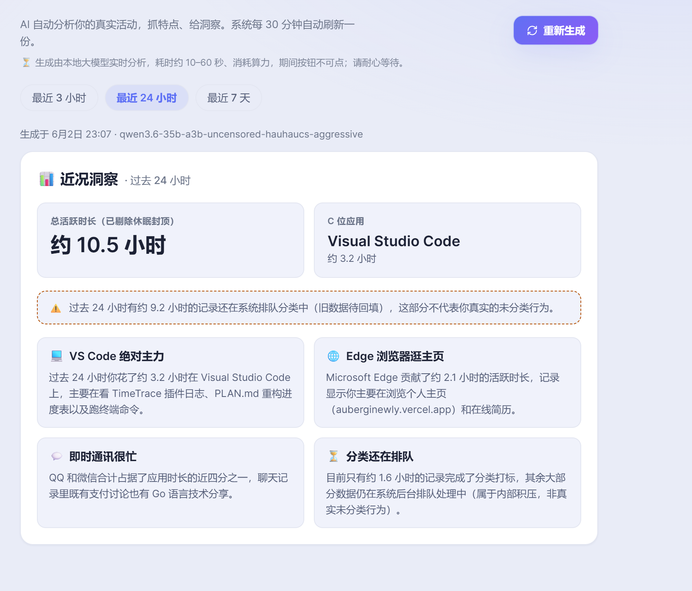
💬 Agent · 你问，它答
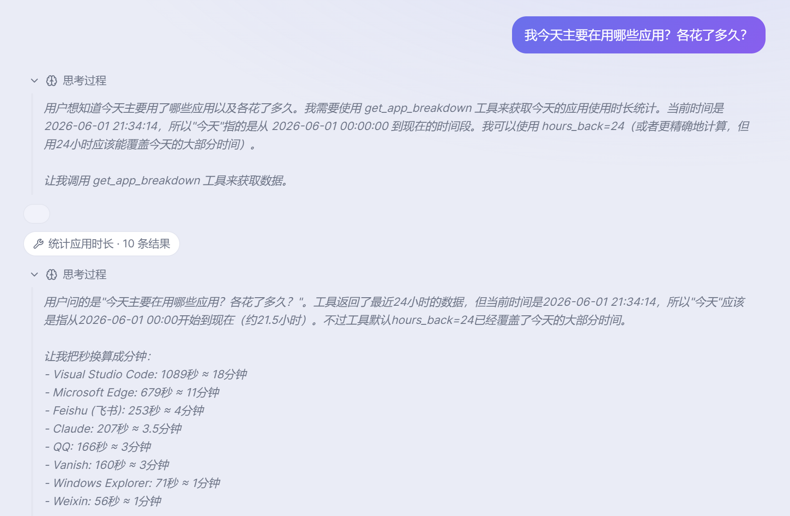
📊 看板 · 它主动给你看
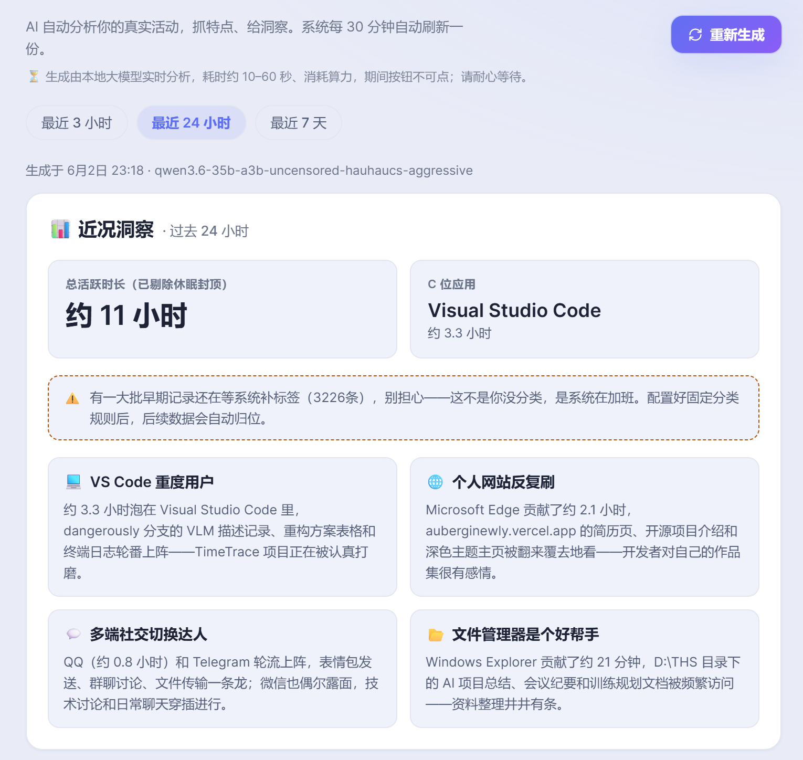
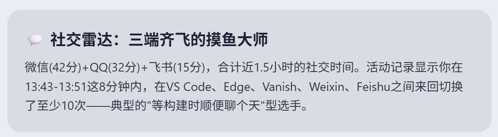
摸鱼大师…？
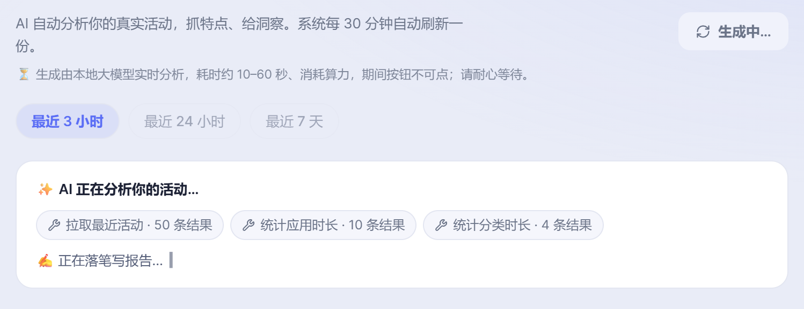
调工具 → 落笔写报告
从随口一问，到有点刁钻的，它都能接。
「我最近 1 小时有没有在摸鱼？」
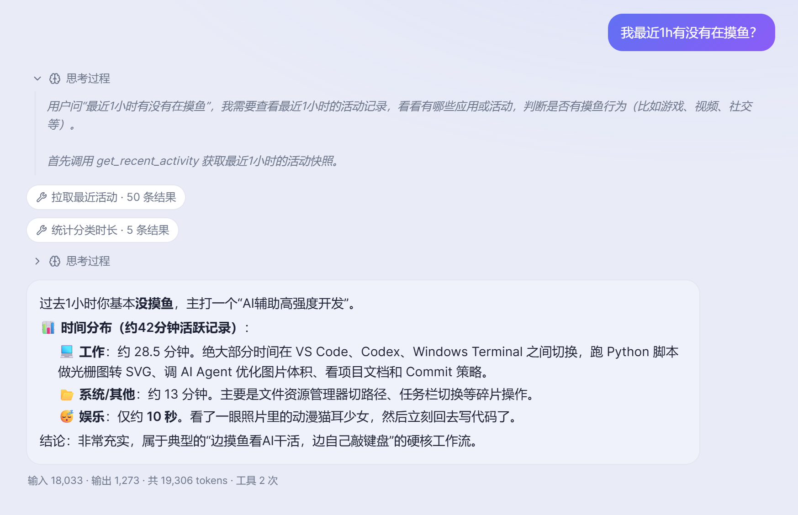
「昨天上班 10–21 点，有没有跟人聊天？什么软件、跟谁？」
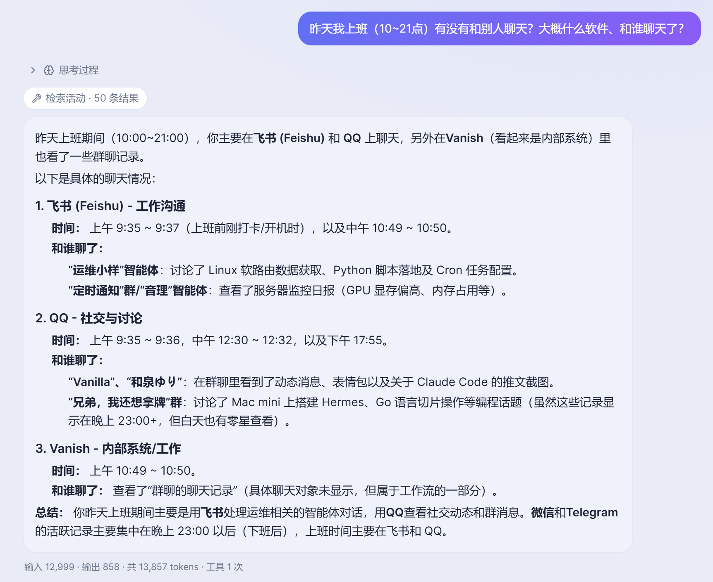
手机（竖屏）也能看，白天黑夜双主题也有。
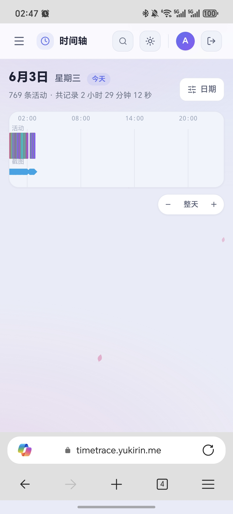
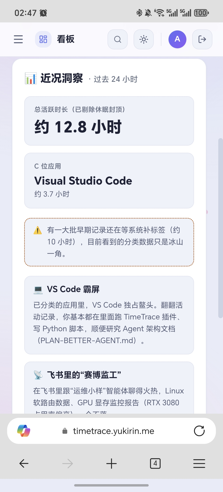
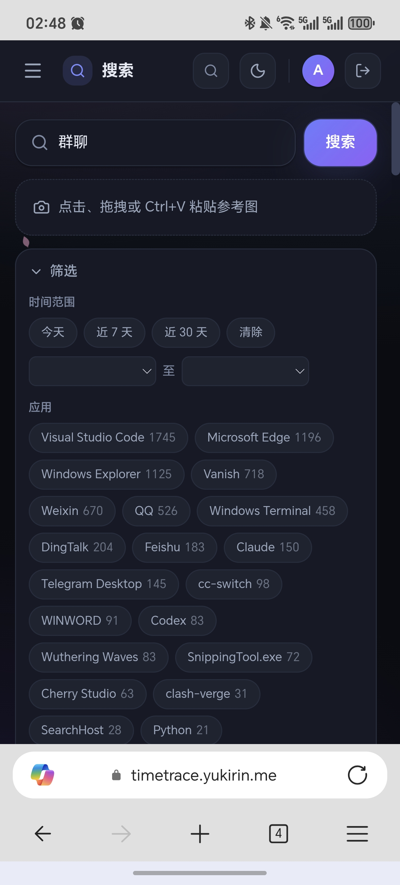
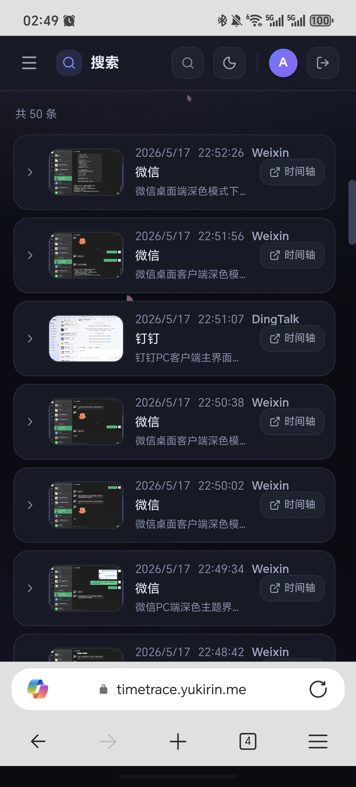
我的决定：隐私第一。
隐私第一
不调任何外来模型——描述、分类、问答全用自己显卡（RTX 3080）上的本地模型。数据一步都不出门。
服务端常驻 → 客户端/服务端分离
服务端在家里小主机后台一直跑。电脑关了，它照样消化白天堆积的分析、照样出看板；手机打开网站也能看。
多路径 · 两条线自动切
在家走局域网 192.168.*.*（最快）；在外走域名 → VPS → FRP 隧道（因为没有公网 IP 所以得绕一圈）。带宽比延迟更重要。
模型只能跑在自己卡上，
那怎么让小小的量化模型回答正确？
为了隐私，只能用本地这张卡跑得动的、还经过量化的小模型。让其作为能够「调工具 → 查记忆 → 回答」agent 的模型基座感觉还是很难的……我现在主要是2方面的想法：① 在 prompt 里仔细引导它该怎么做；② 在数据构成上下功夫（目前还只有帧级别的原始数据）。
目前的局限：只有 5 个工具、50k 上下文窗口小、小模型过度/无限思考，无 subagent / 分层检索。问得复杂一点就会回答不出来。
未来改进方向（？）：把数据一层层往上聚合（关键帧 → 片段 → 摘要），agent 想深入哪段就顺着往下钻；让工具更全面更多样；引导 agent 探索路径。让 agent 看到的信息更完整、有粗有细。三条路一起找，再融合排个序。
(k=60)
关键词 + 以图搜图 + RRF 融合是成功的；语义向量这条基建写好了但还没接进搜索入口。
绕了一圈，最后选了最朴素的那条。
一开始想搞复杂的：把画面里的文字抽出来，再用嵌入 / KNN 投票来分类（相当于让它「持续学习」）。后来发现这条路不划算——这种持续学习本身就难调，而且它得靠你不停地给记录打标签来喂数据，可谁会闲到天天给自己打标签呢。其实就 6 个固定分类 + 一个能看懂截图的 VLM，已经够用了。
于是删掉 KNN，改成最朴素的：让 VLM 在描述每一帧时，顺手从 6 类里挑一个；再加上你自己写的规则，规则的分量更重、会盖过 VLM 的猜测（比如把 Vanish 永远归「工作」）。谁说了算，靠一个简单的加权投票——有规则就听规则，没规则才听 AI。
未来：agent 发现一个没见过的新软件，可以在聊天里提醒你、问你归哪类、为什么，然后直接帮你写进规则。时间很赶，这个项目完全（100%）是 AI 堆出来的。
大量时间花在重构
客户端 / 服务端分离这套重构占了很多精力，绝大部分（100%）代码是 AI 写的。
不会前端，也不知道如何驾驭 AI 写前端
很多地方只能靠自己截图 + 描述跟 AI 来回对；后端我也只懂一点点架构和逻辑而已。
调试靠 AI
全靠 Claude Code + SSH 看日志、远程联调，还有不少小 bug——但目前至少跑得起来。
希望我还会继续完善这个项目 🙏
继续烧 token。
目前刚能跑。剩下的就是堆时间和 Token 把它打磨完整。